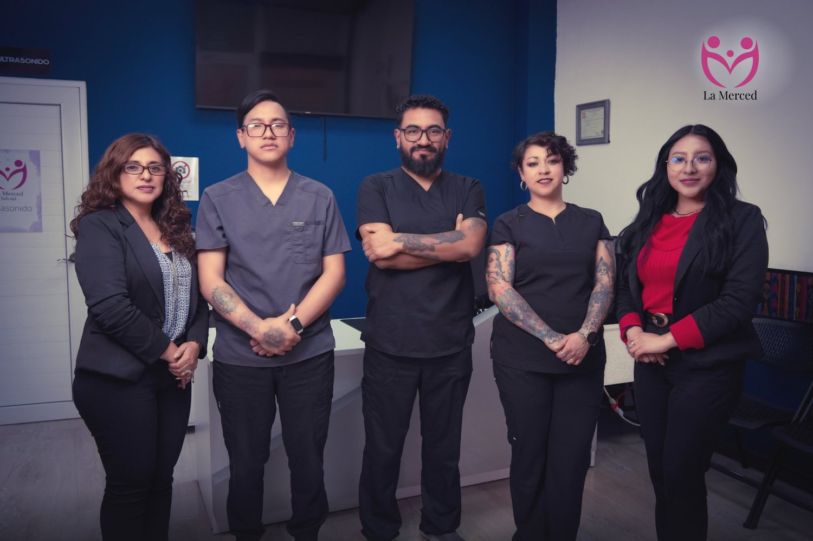

La Merced nació con una convicción simple: un diagnóstico claro y a tiempo puede cambiar —o salvar— una vida. Por eso cada estudio que hacemos lleva lectura médica y el trato que tú y tu familia merecen.

Llevamos años acompañando a las familias de Quetzaltenango, Salcajá, Totonicapán y toda la región. Muchos médicos nos recomiendan a sus pacientes porque saben que aquí el estudio se lee con criterio profesional.
Cada estudio se respalda con criterio profesional, no solo con el equipo.
Te guiamos al estudio que de verdad necesitas, sin venderte de más.
Sabemos que detrás de cada cita hay una preocupación real. Te acompañamos.
Contenido y estudios revisados por un profesional en imágenes diagnósticas.
"Visité La Merced porque venía mi pequeño en camino y el doctor me dio un gran respiro. Muy amable y fino al atender. Súper recomendados."
"Muy buen doctor. Hace 3 años me dijo que era nena y sí tengo mi nena. Acertó completamente."
"Excelente servicio y buena atención. Exactamente todo lo que dice la tecnología es verdad."
Tu reseña ayuda a otras familias a encontrarnos. Elige la sede donde te atendieron:
Estamos para acompañarte. Escríbenos por WhatsApp y con gusto te orientamos.
Escríbenos por WhatsApp